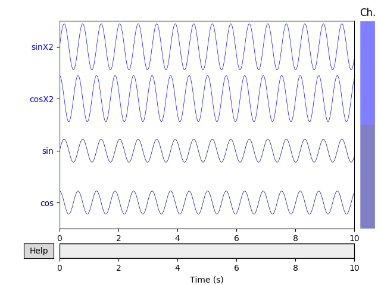
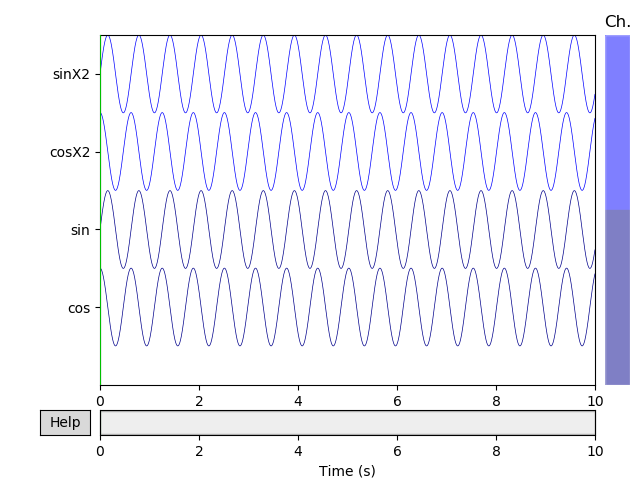

Note
Click here to download the full example code
Creating MNE objects from data arrays¶
In this simple example, the creation of MNE objects from numpy arrays is demonstrated. In the last example case, a NEO file format is used as a source for the data.
# Author: Jaakko Leppakangas <jaeilepp@student.jyu.fi>
#
# License: BSD (3-clause)
import numpy as np
import neo
import mne
print(__doc__)
Out:
Create arbitrary data
sfreq = 1000 # Sampling frequency
times = np.arange(0, 10, 0.001) # Use 10000 samples (10s)
sin = np.sin(times * 10) # Multiplied by 10 for shorter cycles
cos = np.cos(times * 10)
sinX2 = sin * 2
cosX2 = cos * 2
# Numpy array of size 4 X 10000.
data = np.array([sin, cos, sinX2, cosX2])
# Definition of channel types and names.
ch_types = ['mag', 'mag', 'grad', 'grad']
ch_names = ['sin', 'cos', 'sinX2', 'cosX2']
Create an info object.
# It is also possible to use info from another raw object.
info = mne.create_info(ch_names=ch_names, sfreq=sfreq, ch_types=ch_types)
Create a dummy mne.io.RawArray object
raw = mne.io.RawArray(data, info)
# Scaling of the figure.
# For actual EEG/MEG data different scaling factors should be used.
scalings = {'mag': 2, 'grad': 2}
raw.plot(n_channels=4, scalings=scalings, title='Data from arrays',
show=True, block=True)
# It is also possible to auto-compute scalings
scalings = 'auto' # Could also pass a dictionary with some value == 'auto'
raw.plot(n_channels=4, scalings=scalings, title='Auto-scaled Data from arrays',
show=True, block=True)
- 
- 
Out:
Creating RawArray with float64 data, n_channels=4, n_times=10000
Current compensation grade : 0
Range : 0 ... 9999 = 0.000 ... 9.999 secs
Ready.
EpochsArray
event_id = 1 # This is used to identify the events.
# First column is for the sample number.
events = np.array([[200, 0, event_id],
[1200, 0, event_id],
[2000, 0, event_id]]) # List of three arbitrary events
# Here a data set of 700 ms epochs from 2 channels is
# created from sin and cos data.
# Any data in shape (n_epochs, n_channels, n_times) can be used.
epochs_data = np.array([[sin[:700], cos[:700]],
[sin[1000:1700], cos[1000:1700]],
[sin[1800:2500], cos[1800:2500]]])
ch_names = ['sin', 'cos']
ch_types = ['mag', 'mag']
info = mne.create_info(ch_names=ch_names, sfreq=sfreq, ch_types=ch_types)
epochs = mne.EpochsArray(epochs_data, info=info, events=events,
event_id={'arbitrary': 1})
picks = mne.pick_types(info, meg=True, eeg=False, misc=False)
epochs.plot(picks=picks, scalings='auto', show=True, block=True)
Out:
3 matching events found
No baseline correction applied
Not setting metadata
0 projection items activated
0 bad epochs dropped
EvokedArray
nave = len(epochs_data) # Number of averaged epochs
evoked_data = np.mean(epochs_data, axis=0)
evokeds = mne.EvokedArray(evoked_data, info=info, tmin=-0.2,
comment='Arbitrary', nave=nave)
evokeds.plot(picks=picks, show=True, units={'mag': '-'},
titles={'mag': 'sin and cos averaged'}, time_unit='s')
Create epochs by windowing the raw data.
# The events are spaced evenly every 1 second.
duration = 1.
# create a fixed size events array
# start=0 and stop=None by default
events = mne.make_fixed_length_events(raw, event_id, duration=duration)
print(events)
# for fixed size events no start time before and after event
tmin = 0.
tmax = 0.99 # inclusive tmax, 1 second epochs
# create :class:`Epochs <mne.Epochs>` object
epochs = mne.Epochs(raw, events=events, event_id=event_id, tmin=tmin,
tmax=tmax, baseline=None, verbose=True)
epochs.plot(scalings='auto', block=True)
Out:
[[ 0 0 1]
[1000 0 1]
[2000 0 1]
[3000 0 1]
[4000 0 1]
[5000 0 1]
[6000 0 1]
[7000 0 1]
[8000 0 1]
[9000 0 1]]
10 matching events found
No baseline correction applied
Not setting metadata
0 projection items activated
Loading data for 10 events and 991 original time points ...
0 bad epochs dropped
Loading data for 10 events and 991 original time points ...
Loading data for 10 events and 991 original time points ...
Create overlapping epochs using mne.make_fixed_length_events() (50 %
overlap). This also roughly doubles the amount of events compared to the
previous event list.
duration = 0.5
events = mne.make_fixed_length_events(raw, event_id, duration=duration)
print(events)
epochs = mne.Epochs(raw, events=events, tmin=tmin, tmax=tmax, baseline=None,
verbose=True)
epochs.plot(scalings='auto', block=True)
Out:
[[ 0 0 1]
[ 500 0 1]
[1000 0 1]
[1500 0 1]
[2000 0 1]
[2500 0 1]
[3000 0 1]
[3500 0 1]
[4000 0 1]
[4500 0 1]
[5000 0 1]
[5500 0 1]
[6000 0 1]
[6500 0 1]
[7000 0 1]
[7500 0 1]
[8000 0 1]
[8500 0 1]
[9000 0 1]
[9500 0 1]]
20 matching events found
No baseline correction applied
Not setting metadata
0 projection items activated
Loading data for 20 events and 991 original time points ...
1 bad epochs dropped
Loading data for 19 events and 991 original time points ...
Loading data for 19 events and 991 original time points ...
Extracting data from NEO file
# The example here uses the ExampleIO object for creating fake data.
# For actual data and different file formats, consult the NEO documentation.
reader = neo.io.ExampleIO('fakedata.nof')
bl = reader.read(lazy=False)[0]
# Get data from first (and only) segment
seg = bl.segments[0]
title = seg.file_origin
ch_names = list()
data = list()
for ai, asig in enumerate(seg.analogsignals):
# Since the data does not contain channel names, channel indices are used.
ch_names.append('Neo %02d' % (ai + 1,))
# We need the ravel() here because Neo < 0.5 gave 1D, Neo 0.5 gives
# 2D (but still a single channel).
data.append(asig.rescale('V').magnitude.ravel())
data = np.array(data, float)
sfreq = int(seg.analogsignals[0].sampling_rate.magnitude)
# By default, the channel types are assumed to be 'misc'.
info = mne.create_info(ch_names=ch_names, sfreq=sfreq)
raw = mne.io.RawArray(data, info)
raw.plot(n_channels=4, scalings={'misc': 1}, title='Data from NEO',
show=True, block=True, clipping='clamp')
Out:
Creating RawArray with float64 data, n_channels=1, n_times=1600000
Range : 0 ... 1599999 = 0.000 ... 160.000 secs
Ready.
Total running time of the script: ( 0 minutes 2.937 seconds)
Estimated memory usage: 69 MB